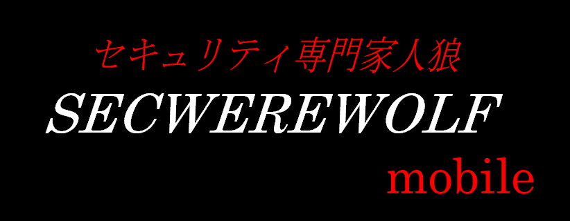

CSIRT側

調査の結果はCSIRT陣営の人でした。
ENTERを押して次の人に端末を渡してください。
|
近年、事務作業を行う人達による不正が後を絶たない・・ ある夜、組織における自身の処遇に憤りを感じ、 コンピューターやネットワークの扱いに長けた 「ブラックハットハッカー」の協力を得て、 「汚職者」は営業秘密の不正取得を行った。 汚職者は自身の自尊心を傷つけた者たちに 罪を擦り付けるべく、毎晩犯行に及ぶ。 経営者はこの一連の事件に対し、セキュリティ専門家に よって結成されたチーム。「CSIRT」を設立した 「CSIRT」は個々の専門性に基づいて 被疑者との面接による不正調査を開始する 組織の治安を取り戻すに行われたのは 「毎日一人の解雇者を決める」というものだった 「CSIRT」は組織に蔓延る 「汚職者」を突き止める事が出来るのだろうか・・・ |
ノーティフィケーション:
汚職者:
フォレンジックエンジニア:
リサーチャー:
コマンダー:
ブラックハットハッカー:
上記プレイヤーはENTERボタンを押して
アクションを行ってください
あなたは汚職者です。
今夜、解雇するプレイヤーを1人選んでください。
汚職者が２人以上いる場合、
汚職者は他の汚職者を知ることが出来ます。
CSIRT陣営
あなたはノーティフィケーションです。
あなたが汚職者だと思うプレイヤーを
1人選んでください。
最も汚職者だと思われているプレイヤーが
翌朝公表されます
CSIRT陣営
あなたはフォレンジックエンジニアです。
あなたは、シーサート陣営かサイバー犯罪者陣営か
確認したいプレイヤーを選んでください
証拠調査によって、選んだプレイヤーが汚職者か
どうか知ることが出来ます。
汚職者には「汚職者」、それ以外には
シーサート陣営と表示されます。
CSIRT陣営
あなたはリサーチャーです。
あなたが汚職者だと思うプレイヤーを
1人選んでください。
最も汚職者だと思われている
プレイヤーが翌朝公表されます。
追跡調査を実施し、解雇されたプレイヤーの
陣営を知ることが出来ます。
汚職者には「汚職者」、
それ以外にはCSIRT陣営と表示されます。
CSIRT陣営
あなたはコマンダーです。
あなたが守りたいプレイヤーを1人選んでください。
護衛調査を実施し1人だけ
汚職者からプレイヤーを守ることが出来ます。
あなたはブラックハットハッカーです。
あなたがCSIRT陣営だと思う
プレイヤーを1人選んでください。
最も汚職者だと思われている
プレイヤーが翌朝公表されます。
ブラックハットハッカーの勝利条件は
サイバー犯罪者側陣営の勝利です。
また、専門調査による調査結果は、
「CSIRT陣営」と表示されます。
上記プレイヤーはENTERボタンを押して
アクションを行ってください
以降上記プレイヤーは、
ゲーム終了まで話してはいけません。
名前を入力した順番に
夜の行動を行ってください。
CSIRT側
ノーティフィ
ケーション
フォレンジック
エンジニア

リサーチャー
解雇されたプレイヤーが
コマンダー
毎晩、汚職者から
サイバー犯罪者陣営
汚職者
CSIRT陣営を解雇させる
ブラック
ハットハッカー
|
ゲーム進行 進行役のゲームマスターは 名前を入力した順の最初の人が行います。 進行は下記の1〜3を繰り返します。 1 夜の時間 初日は各プレイヤーの役職を確認します。2日目以降は各自の役職行動を行います。 2 昼の時間 残されたプレイヤー同士で議論を行い、誰が汚職者かを推理します。 3 夕方の時間 議論の結果、自分が汚職者だと思う人に投票します。票数が最も多い人は解雇されます。 勝利条件 ・会社内のすべての汚職者を解雇できれば「CSIRT陣営」の勝利になります。 ・CSIRT陣営とサイバー犯罪者陣営の人数が同じにできれば「サイバー犯罪者陣営」の勝利になります。 |
著作権情報アシアル株式会社 COPYRIGHT ASIAL CORPORATION. ALL RIGHTS RESERVED. いらすとや © いらすとや. All Rights Reserved. 学校法人岩崎学園情報科学専門学園 © IWASAKI GAKUEN. ALL RIGHTS RESERVED. 特定非営利活動法人日本ネットワークセキュリティ協会 Copyright (C) Japan Network Security Association. All rights reserved. Monaca COPYRIGHT ASIAL CORPORATION. ALL RIGHTS RESERVED. Onsen UI COPYRIGHT ASIAL CORPORATION. ALL RIGHTS RESERVED Apache License Copyright 2019 © IWASAKI GAKUEN. ALL RIGHTS RESERVED. Licensed under the Apache License, Version 2.0 (the "License"); you may not use this file except in compliance with the License. You may obtain a copy of the License athttp://www.apache.org/licenses/LICENSE-2.0 Unless required by applicable law or agreed to in writing, software distributed under the License is distributed on an "AS IS" BASIS, WITHOUT WARRANTIES OR CONDITIONS OF ANY KIND, either express or implied. See the License for the specific language governing permissions and limitations under the License. |
学生制作イラスト
利用規約セキュリティ専門家人狼アプリ 利用規約 本利用規約（以下「本規約」といいます）は、情報科学専門学校（以下「開発者」といいます）が本アプリを提供するサービスの利用条件を定めるものです。利用者は本サービスを利用することにより、本規約に同意したものとみなします。 不同意の意思表示は、本サービスを利用しないことをもってのみ認められるものとします。 第１条（定義および目的） 「本アプリ」とは、セキュリティに興味及び関心を持ってもらうことを目的に、開発者が利用者に提供するアプリケーションです。本規約は、本アプリのサービスの利用に伴い必要となる事項を定めることを目的とします。第２条（商標権） 当アプリに掲載される個々の商標・ロゴマーク、商号に関する権利は、当校または当校に使用を認めた権利者に帰属します。商標法権その他の法律により認められる場合を除き、これらを当校の許諾を得ることなく使用等する行為は商標権法等により禁止されていますので、事前に当校にご連絡の上、許諾を得ていただくようお願いいたします。 第３条（著作権） 本アプリのソースコードはApache License, Version 2.0を適用しております。その他当アプリに表示される文章、画像等すべての情報に関する著作権は、当校または当校に使用を認めた権利者に帰属します。なお、利用者への本アプリの使用許諾は、利用者に対する何らの権利移転等を意味するものではありません。個人的な利用目的による印字、保存や、その他著作権法によって認められる範囲を超えて当アプリの表示内容を使用（複製、改ざん、転載、配布等）することはできません。 第４条（使用許諾） 開発者は、利用者に対し、本規約に従い、本アプリを本目的の範囲内に限り使用することのできる非独占的かつ譲渡不能の権利を許諾します。また本アプリ内で使用されている画像の使用に関しましては、第３条「著作権」で記述している各帰属先にお問い合わせください。第５条（本アプリの変更および削除） 開発者は、利用者へ事前に通知することなく、本アプリの内容を変更することができます。本アプリの内容が変更された場合、利用者は変更後の本アプリを使用することができますが、ソフトウェア更新等開発者所定の操作を行っていただくことがあります。第６条（本規約の変更および終了） 開発者は、利用者へ事前に通知することなく、本規約を変更または終了させることができます。この場合、本規約の変更または終了の旨をGitHubのセキュリティ専門家人狼アプリのページに掲載し、またはこれと同等の方法により利用者に対し周知するものとし、当該いずれかの方法による周知を開始した時点をもって本規約は変更されまたは終了するものとします。なお、第３条「著作権」、第６条「本規約の変更および終了」、第７条「禁止事項」、第８条「責任制限」、第９条「損害賠償等」、第１１条「その他の注意事項」に記載の内容については、本規約が終了した後であっても有効に存続するものとします。 第７条（禁止事項） 利用者は、本アプリを本目的以外のために使用してはならないものとします。利用者は、本アプリの全部または一部を、複製、改変もしくは変換することはできません。利用者は、本アプリの全部または一部を、有償または無償を問わず第三者に販売、頒布、送信可能化、公衆送信、貸与、譲渡、使用許諾その他の処分をすることはできません。 利用者は、本アプリまたはコンテンツを含む利用者が取得する各種情報に付されている著作権表示またはその他の権利表示を削除したり、変更したりすることはできません。 また、本アプリまたはコンテンツを含む利用者が取得する各種情報を、開発者もしくは第三者の知的財産権もしくはその他の権利を侵害し、または利益を損なう態様で使用することはできません。 利用者は、本アプリを個人的かつ非商業的な目的に限り使用することができるものとし、開発者が承諾した場合を除き、営利目的のために使用することはできません。 利用者は、本アプリを公序、良俗に反する行為に使用することはできません。 第８条（責任制限） 本アプリの使用は、利用者自身の責任において行うものとします。開発者は、利用者に対し、本アプリの不具合等がないこと、および特定の目的や機器に対する適応性に対し、なんら保証せず、また、利用者が本アプリを使用したことまたは使用できなかったことに起因して利用者または第三者が被った直接的または間接的な損害について、一切責任を負いません。開発者は、利用者が第三者に本アプリを使用させることにより、利用者または第三者が被った損害について、一切責任を負いません。 開発者は、本アプリ上または本アプリからアクセスすることができるインターネット上に掲載される各種情報を利用者が取得・利用したことまたは取得・利用できなかったことにより利用者が被った損害について、一切責任を負いません。 開発者は、システムの保守・点検を行う場合、システムの障害等により本アプリの各機能の提供ができなくなった場合、または開発者が運用上もしくは技術上やむを得ず本アプリの各機能の一時中止が必要であると判断した場合には、利用者に事前に通知することなく、本アプリの各機能の全部または一部の提供を中止することがあり、これらの場合により利用者が被った損害について、一切責任を負いません。 第９条（損害賠償等） 利用者が本契約に違反した場合は、開発者は、本規約に基づく利用者への使用許諾を撤回し、本アプリサービスの提供を終了させることができます。利用者による本規約の違反に起因して開発者が損害を被った場合、開発者は、当該損害の賠償を利用者に請求することができるものとします。 第１０条（通信の利用） 本アプリの使用にあたっては、アプリのバージョンアップ等に伴い通信を利用して各種情報を送受信することがあり、それにともない発生する通信料は利用者に負担いただきます。第１１条（その他の注意事項） 利用者は、本アプリを日本国内においてダウンロードして使用するものとします。本アプリを国外に持ち出す場合、日本国および諸外国の輸出入関連法規類を遵守するものとし、それらに違反した行為により生じるいかなる問題についても、利用者自身の責任でこれを解決するものとします。本規約の一部が準拠法に抵触し、または裁判の判決等により無効や違法とされた場合であっても、他の規定は影響を受けることなく効力を有するものとします。 |
夜に得た情報をもとに話し合いを行ってください。